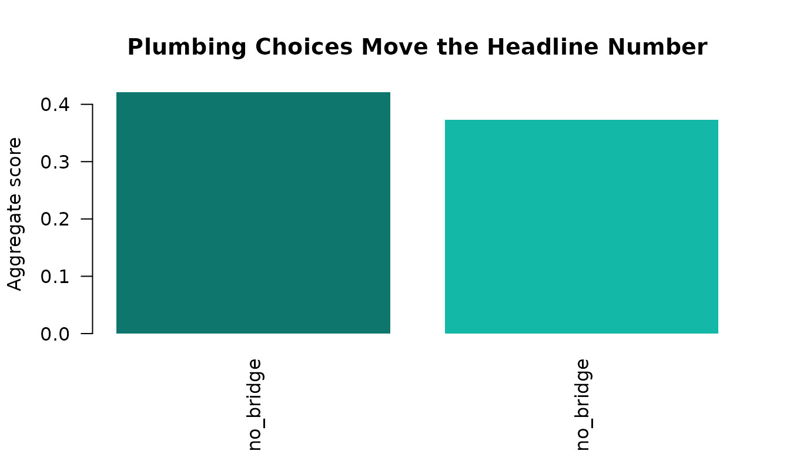

Reproducible User Measures
Source:vignettes/measure-reproducibility.Rmd
measure-reproducibility.RmdO*NET users often arrive with their own score: an exposure measure, a
task classification, a skill index, or a hand-coded construct.
onet2r does not try to decide which score is correct. It
helps with the parts around the score: checking keys, using versioned
O*NET files, aggregating tasks to occupations, adding employment
weights, and recording enough provenance for someone else to reproduce
the number.
This article uses the small archive fixtures shipped with the package. The task score is stylized and should not be interpreted as a real exposure measure. Every displayed table is produced by package functions.
Read Task Files from a Pinned Release
tasks <- onet_archive_read(
"30.3",
"Task Statements",
path = archive_dir,
release_date = "2026-05-01"
)
task_ratings <- onet_archive_read(
"30.3",
"Task Ratings",
path = archive_dir,
release_date = "2026-05-01"
)
tasks |>
select(onet_soc_code, task_id, task_type, task) |>
head() |>
print(width = Inf)
#> # A tibble: 3 × 4
#> onet_soc_code task_id task_type
#> <chr> <chr> <chr>
#> 1 15-1252.00 1001 Core
#> 2 15-1252.00 1002 Supplemental
#> 3 29-1141.00 2001 Core
#> task
#> <chr>
#> 1 Analyze user needs and software requirements.
#> 2 Prepare reports on software testing status.
#> 3 Monitor patient health and record signs.Task Statements carries task ids and Core or
Supplemental labels. Task Ratings carries relevance and
importance ratings used to aggregate task-level scores.
task_ratings |>
select(onet_soc_code, task_id, scale_id, scale_name, data_value, recommend_suppress) |>
head() |>
print(width = Inf)
#> # A tibble: 5 × 6
#> onet_soc_code task_id scale_id scale_name data_value recommend_suppress
#> <chr> <chr> <fct> <chr> <dbl> <chr>
#> 1 15-1252.00 1001 RT Relevance of Task 95 N
#> 2 15-1252.00 1001 IM Importance 4.5 N
#> 3 15-1252.00 1002 RT Relevance of Task 45 N
#> 4 29-1141.00 2001 RT Relevance of Task 98 N
#> 5 29-1141.00 2001 IM Importance 4.8 NValidate a User-Supplied Measure
Here the user brings a 3-task score. It could come from a model, a survey, or manual coding. The constructor checks that the task ids match the selected O*NET release universe.
task_scores <- tibble::tibble(
task_id = c("1001", "1002", "2001"),
score = c(0.80, 0.40, 0.20)
)
measure <- onet_measure(
task_scores,
key = "task_id",
score = "score",
key_type = "task",
universe = tasks$task_id,
measure_id = "stylized_task_score",
measure_name = "Stylized task score",
release_version = "30.3"
)
onet_coverage(measure)
#> # A tibble: 1 × 6
#> key_type n_input n_universe n_matched coverage_share employment_coverage_share
#> <chr> <int> <int> <int> <dbl> <dbl>
#> 1 task 3 3 3 1 NAThe object also stores unmatched keys explicitly.
Roll Tasks to Occupations
The next step is mechanical. We use O*NET task relevance ratings as weights and restrict the calculation to Core tasks.
occupation_scores <- onet_task_to_occupation(
measure,
task_ratings = task_ratings,
task_metadata = tasks,
weight_scale = "RT",
include_supplemental = FALSE
)
occupation_scores
#> # A tibble: 2 × 5
#> onet_soc_code n_tasks total_task_weight measure_score soc_code
#> <chr> <int> <dbl> <dbl> <chr>
#> 1 15-1252.00 1 95 0.8 15-1252
#> 2 29-1141.00 1 98 0.2 29-1141Changing the Core-only rule is a plumbing choice, not a change to the user’s score. It belongs in provenance and sensitivity checks.
occupation_scores_all <- onet_task_to_occupation(
measure,
task_ratings = task_ratings,
task_metadata = tasks,
weight_scale = "RT",
include_supplemental = TRUE
)
occupation_scores_all
#> # A tibble: 2 × 5
#> onet_soc_code n_tasks total_task_weight measure_score soc_code
#> <chr> <int> <dbl> <dbl> <chr>
#> 1 15-1252.00 2 140 0.671 15-1252
#> 2 29-1141.00 1 98 0.2 29-1141Add Employment Weights
OEWS files are SOC-level. The weight helper makes the source vintage explicit and returns a single shape used downstream.
oews_sample <- onet_oews_national(
path = system.file("extdata", "oews-national-sample.csv", package = "onet2r")
)
weights <- onet_weight_panel_oews(oews_sample, year = 2024)
weights |>
print(width = Inf)
#> # A tibble: 3 × 7
#> reference_soc_code year employment weight_share source source_taxonomy
#> <chr> <int> <dbl> <dbl> <chr> <chr>
#> 1 11-1011 2024 211230 0.0404 OEWS 2018 SOC
#> 2 15-1252 2024 1847900 0.353 OEWS 2018 SOC
#> 3 29-1141 2024 3175400 0.607 OEWS 2018 SOC
#> reference_taxonomy
#> <chr>
#> 1 2018 SOC
#> 2 2018 SOC
#> 3 2018 SOCAggregate and Inspect Provenance
national <- onet_measure_aggregate(
occupation_scores,
weights,
measure_id = "stylized_task_score"
)
national |>
select(-coverage, -provenance) |>
print(width = Inf)
#> # A tibble: 1 × 7
#> measure_id aggregate total_employment covered_employment
#> <chr> <dbl> <dbl> <dbl>
#> 1 stylized_task_score 0.421 5234530 5023300
#> employment_coverage_share n_occupations n_reference_soc
#> <dbl> <int> <int>
#> 1 0.960 2 2
onet_provenance(national)
#> # A tibble: 1 × 7
#> measure_id weight_source weight_year source_taxonomy reference_taxonomy
#> <chr> <chr> <int> <chr> <chr>
#> 1 stylized_task_sc… OEWS 2024 2018 SOC 2018 SOC
#> # ℹ 2 more variables: bridge_used <lgl>, crosswalk_path <chr>Check Sensitivity to Plumbing Choices
diagnostic <- onet_measure_sensitivity(
measure,
weight_panels = weights,
task_ratings = task_ratings,
task_metadata = tasks,
include_supplemental = c(FALSE, TRUE)
)
diagnostic |>
select(scenario, aggregate, employment_coverage_share, movement, movement_percent) |>
print(width = Inf)
#> # A tibble: 2 × 5
#> scenario aggregate
#> <chr> <dbl>
#> 1 RT_core / task_release / weights / no_bridge 0.421
#> 2 RT_core_plus_supplemental / task_release / weights / no_bridge 0.373
#> employment_coverage_share movement movement_percent
#> <dbl> <dbl> <dbl>
#> 1 0.960 0 0
#> 2 0.960 -0.0473 -0.112
barplot(
height = setNames(diagnostic$aggregate, diagnostic$scenario),
col = c("#0f766e", "#14b8a6"),
border = NA,
las = 2,
ylab = "Aggregate score",
main = "Plumbing Choices Move the Headline Number"
)
The diagnostic does not say which task score is right. It shows how much the headline number moves when non-substantive plumbing changes.